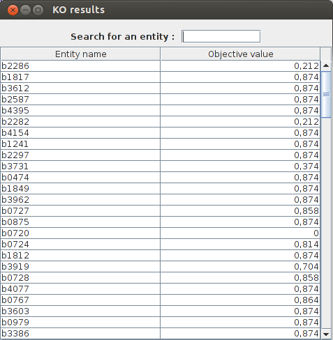
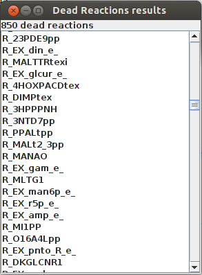

FlexFlux documentation
FlexFlux is a tool for metabolic fluxes analysis. It is usable as Java executable files (.jar format) and is intergrated to parseBioNet library. FlexFlux is based on a mathematical method, FBA (flux balance analysis) which consists in transforming a metabolic network into linear equations and calculate fluxes thanks to linear programming. This method does not rely on kinetic parameters but is based on constrainsts, in particular steady state constraints. From these constraints, FBA can determine an optimal value (maximal or minimal) for one or more fluxes : the objective function.
To sum up, FBA needs :
- A metabolic network
- Constraints
- An objective funcion
FlexFlux does everything that concerns the transcription of the metabolic network as well as the constraints (that can be logical constraints) into linear equations. Mathematical linear programming caculations are then performed by external optimization software. FlexFlux contains many methods dedicated to flux analysis all based on FBA. The two main objectives of this programme are flexibility and rapidity.
General functioning and file formats
FlexFlux works by taking as an input three different files :
- A file describing the metabolic network (SBML or tabulated file).
- A condition file containing the objective function as well as constraints concerning the value of variables.
- An interaction file containing logical constraints and that can take into account an activation time for these constraints.
File describing the network
From this file, FlexFlux performs a few actions:- It adds to the model all reactions, genes, and proteins as variables.
- Consequently to the steady-state assumption, it adds constraints corresponding to the steady state..
- It adds all reaction fluxes constraints that are written
this way in an SBML file:
<parameter id="LOWER_BOUND" value="0.000000" units="mmol_per_gDW_per_hr"/> <parameter id="UPPER_BOUND" value="999999.000000" units="mmol_per_gDW_per_hr"/>
If no value is given for a reaction, the lower bound is set to 0 for irreversible reactions and to -999999 for reversible ones, and the upper bound is set to 999999. - It adds to the model all the logical constraints (as interactions) concerning gene-protein-reaction interactions (GPR).
Condition file
This file is used to define the objective function as well as constraints.
Objective function
To set the objective function :
obj : MAX(2*a + -1*b)where a and b are variables. The variables must be separated by a "+" sign and the coefficients can be any real number.
Multiple objective function can be written. In this case, all objective function (excpet for the last one), will be considered as constraints : the optimal value will be fixed (with a percentage of liberty than can be specified), before starting the actual analysis.
Exeample :
obj : MAX(R_GLC) obj : MAX(R_BIOMASS)
First FlexFlux will calculate the maximum value for R_GLC, add it as a constraint, and then it will continue normally with R_BIOMASS as the objective function
Conditions
Then, each line corresponds to a condition :- The ligne may contain three columns :
a 3 6
Which means 3 < a < 6 - Or two columns :
b -1
Which means b=-1
INTEGERThe lines :
INTEGER a 3 6mean thah a can take the values 3 4 5 and 6.
For binary values (0 or 1), the variable name has to be written under the line BINARY.
To set it to 0 or 1, the value must be written next to the variable. The lines :BINARY a b 1mean : a is a boolean and can be equal to 0 or 1 and b is a boolean equal to 1
Equations
Equations can be added under the lineEQUATIONSThese equations must be composed of known variables and respect a few rules :
- Only one equality (or inequality) is possible by line : For example : 0 < a < 3*b will have to be written over two lines.
- Variables can be written without coefficient. If they have one, it must be placed before the variable name. Exemple 3*a + 4*b < 5
- The negative sign must be on the coefficient : a+3*-b must be written : a + -3*b
Example of a condititon file :
obj : MAX(R_BIOMASS) a 5 c 10 d 0 50 M_glc_D_b 10.4 M_ac_b 0.3 M_lcts_b 5.8 lacZ 0.001 0.03 R_EX_glc_e_ -10.5 999999 R_EX_o2_e_ -15 999999 R_EX_ac_e_ -2.5 4 R_EX_lcts_e_ -3 999999 INTEGER BINARY EQUATIONS d = 2*a + 3*c
Interaction file
An interaction works with two parts :- A condition : what will be checked.
- A consequence : what will be done is the condition is true.
Those two parts must be writtent between brackets [ ]
There are two kinds of interactions :- An IF THEN interaction. They must be written this way :
IF[A]THEN[B]
This one means : if A is not equal to 0, then B must not be equal to 0. - An EQ interaction. They must be written this way :
[A]EQ[B]
This one means : if A is not equal to 0, then B must not be equal to 0, AND if B is not equal to 0, A must not be equal to 0.
There are two available keywords to combine interactions : AND and OR.
For example :IF[A AND B]THEN[C]This means that if A is not equal to 0 and B is not equal to 0, then c must not be equal to 0.
Specific values for variables can also be added thanks to the signs :
=,<=,<,>=,>,*A*0.5 means that A must be equals to 0.5 times it's upper bound.
Two optional values can be added to an interaction and they will respectively specify:
- How long it takes for the consequence to become active.
- How long the interaction will stay true.
Example of an interaction file :
IF[M_glc_D_b>0.01]THEN[R_EX_ac_e_>=0][0][0.4] IF[M_glc_D_b>0]THEN[lacZ=0.001] IF[M_glc_D_b=0]THEN[lacZ=0.03] IF[lacZ
Details of the analyses
This section details all possible analyses using FlexFlux. Each of these analyses is exectued with a different .jar file. They take command-line arguments as an input and the output can be either a text file containing all the results data, a graphical representation of the data, or both.Simple FBA
Computes a simple FBA analysis and returns the value of the optimized objective function as well as all variable values. Variable values can represent only solution amongst many.Command-line arguments
- -s String : Sbml file path
- -cond String : Condition file path
- -int String : [OPTIONAL]Interaction file path
- -nointsolv : [OPTIONAL, default = false]Interactions are not in the solver
- -out String : [OPTIONAL]Output file name
- -plot : [OPTIONAL, default = false]Plots the results
- -lib Double : [OPTIONAL, default = 0]Percentage of non optimality for new constraints
- -pre Integer : [OPTIONAL, default = 6]Number of decimals of precision for calculations
- -sol String : Solver name
- -h : Prints help
Example : FlexfluxFBA -s network.xml -cond cond.txt -int int.txt -plot -out out.txt
Results
Example of a text result file :FBA result obj : 0.5922576416566118 R_PANTS 3.411404015863724E-4 R_DXPRIi 0.0014149035058848211 R_DHAPT 0.9215476886330025 R_CDPMEK 0.0014149035058848211 R_SHSL1 0.09116207297459579 R_SHCHD2 1.3207345408636044E-4 R_DNTPPA 3.96220362258968E-4 R_GLUTRS 0.002113175265381767 R_GLUTRR 0.002113175265381767 R_COBALT2tpp 0.0018703496323081898
Example of a graphical result :

Flux Variability Analyses : FVA
An FVA analysis consists in getting the optimal value for the objective function, setting this value as a constraint and, given a list of entities, minimize and maximize their values. This analysis returns the objective value, and the minimum and maximum value for each entity desired.Command-line arguments
- -s String : Sbml file path
- -cond String : Condition file path
- -int String : [OPTIONAL]Interaction file path
- -nointsolv : [OPTIONAL, default = false]Interactions are not in the solver
- -e String : [OPTIONAL]Biological entities to perfrom the FVA analysis on (Space-separated list of entities, example : "R1 R2 G1 G2"). If empty, FVA is done on all reactions
- -n Integer : [OPTIONAL, default = number of available processors]Number of threads
- -out String : [OPTIONAL]Output file name
- -plot : [OPTIONAL, default = false]Plots the results
- -lib Double : [OPTIONAL, default = 0]Percentage of non optimality for new constraints
- -pre Integer : [OPTIONAL, default = 6]Number of decimals of precision for calculations
- -sol String : Solver name
- -h : Prints help
Example 1 : FlexfluxFVA -s network.xml -cond cond.txt -int int.txt -plot -out out.txt
Example 2 : FlexfluxFVA -s network.xml -cond cond.txt -int int.txt -plot -out out.txt -e "R1 R2 G1 G2" -lib 10
Results
Example of a text result file :
FVA result obj : 0.7828866047548423 Entity name min max R_PAPA161 0.0 3.207242116332054E-8 R_OMMBLHX3 0.0 4.6566128730773926E-10 R_EX_cobalt2_e_ -0.002472355897815792 -0.002472355897815792 R_GLCTR2 0.0 5.7622739912943644E-11 R_PLIPA1E161pp 0.0 7.440347005172043E-9 R_EX_tma_e_ 0.0 0.0 R_GUAtpp 1.0875626821338358E-7 0.0 R_F6Ptex 0.0 0.0 R_DADNtex 0.0 0.0 R_AIRC2 0.34971936164232653 0.34971936252055374 R_ACACtex 0.0 0.0 R_AGM4PCP 0.0 -3.700601804157433E-10
Example of a graphical result :

Knock out analysis : KO
A KO analysis consists in setting network entities values to 0, and observe the effect on the objective function. There are 3 ways to perfrom this KO analysis :- Mode 0: the KO analysis is performed on reactions.
- Mode 1: the KO analysis is performed on genes.
- If a list of biological entities are specified (with argument -e), the KO analysis is performed on those.
Command-line arguments
- -s String : Sbml file path
- -cond String : Condition file path
- -int String : [OPTIONAL]Interaction file path
- -nointsolv : [OPTIONAL, default = false]Interactions are not in the solver
- -e String : [Optional]Biological entities to perfrom the KO analysis on (Space-separated list of entities, example : "R1 R2 G1 G2"). If empty, KO is done on all reactions (mode 0) or all genes (mode 1)
- -mode Integer : [OPTIONAL, default = 0]KO mode :
- Mode 0: the KO analysis is performed on reactions.
- Mode 1: the KO analysis is performed on genes.
- -n Integer : [OPTIONAL, default = number of available processors]Number of threads
- -out String : [OPTIONAL]Output file name
- -plot : [OPTIONAL, default = false]Plots the results
- -lib Double : [OPTIONAL, default = 0]Percentage of non optimality for new constraints
- -pre Integer : [OPTIONAL, default = 6]Number of decimals of precision for calculations
- -sol String : Solver name
- -h : Prints help
Example 1 : FlexfluxKO -s network.xml -cond cond.txt -int int.txt -plot -out out.txt -mode 1
Example 2 : FlexfluxKO -s network.xml -cond cond.txt -int int.txt -plot -out out.txt -e "R1 R2 G1 G2"
Results
Example of a text result file :
KO results : R_EX_for_e obj value : 0.8739215069684306 R_PFK obj value : 0.7040369478590232 R_EX_pi_e obj value : -5.558392288107506E-15 R_GND obj value : 0.863813309504001 R_EX_lac_D_e obj value : 0.8739215069684306 R_MALS obj value : 0.8739215069684306 R_FRD7 obj value : 0.8739215069684306 R_CYTBD obj value : 0.21166294973531097 R_EX_etoh_e obj value : 0.8739215069684304 R_EX_mal_L_e obj value : 0.8739215069684306 R_EX_co2_e obj value : 0.46166961416013474
Example of a graphical result :
Comparison of two FVAs
Compares the results of two FVA analyses given a metabolic network, an objective fuction and two different set of constraints. This analysis returns the objective value, the minimum and maximum value for each entity desired, for both conditions.Command-line arguments
- -s String : Sbml file path
- -cond String : Condition file path
- -cond2 String : Second condition file path
- -int String : [OPTIONAL]Interaction file path
- -nointsolv : [OPTIONAL, default = false]Interactions are not in the solver
- -e String : [OPTIONAL]Biological entities to perfrom the FVA analyses on (Space-separated list of entities, example : "R1 R2 G1 G2"). If empty, FVA is done on all reactions
- -n Integer : [OPTIONAL, default = number of available processors]Number of threads
- -out String : [OPTIONAL]Output file name
- -plot : [OPTIONAL, default = false]Plots the results
- -lib Double : [OPTIONAL, default = 0]Percentage of non optimality for new constraints
- -pre Integer : [OPTIONAL, default = 6]Number of decimals of precision for calculations
- -sol String : Solver name
- -h : Prints help
Example 1 : FlexfluxCompFVA -s network.xml -cond cond.txt -cond2 cond2.txt -int int.txt -plot -out out.txt
Example 2 : FlexfluxCompFVA -s network.xml -cond cond.txt -cond2 cond2.txt -int int.txt -plot -out out.txt -e "R1 R2 G1 G2"
Results
Example of a text result file :
FVA comparison result obj1 : 0.7828866047383652 obj2 : 0.49596211041804494 Name min1 max1 min2 max2 R_PANTS 4.509426843292984E-4 4.509426115533177E-4 2.856741756007939E-4 2.856732640866555E-4 R_PTRCabcpp 0.0 1.6274867675747373E-8 0.0 -5.061156116425991E-8 R_PGSA161 0.0 2.6279160236786225E-9 0.0 -5.443135009386424E-8 R_PGSA160 0.0 5.872649921911943E-9 0.0 -2.542352461887276E-8 R_GLUDy -6.685636303446345 -6.685636303151922 -4.234771399285264 -4.23477180974523 R_G6Ptex 0.0 0.0 0.0 0.0 R_12DGR141tipp 0.0 1.8335413187742233E-9 0.0 -4.4298705148548834E-8 R_3CMPtex 0.0 0.0 0.0 0.0
Example of a graphical result :

Dead reactions
Finds dead reactions in a given metabolic network. Dead reactions are those unable to carry a steady state flux. This analysis returns the list of dead reactions.Command-line arguments
- -s String : Sbml file path
- -cond String : Condition file path
- -int String : [OPTIONAL]Interaction file path
- -nointsolv : [OPTIONAL, default = false]Interactions are not in the solver
- -d Double : [OPTIONAL, default = 0.000001]Maximal distance of the reaction flux from 0 to be considered as dead
- -mode Integer : [OPTIONAL, default = 0]Dead reactions
mode:
- - Mode 0: Reactions fluxes are not changed.
- - Mode 1: All reactions fluxes are set to a maximum value.
- -n Integer : [OPTIONAL, default = number of available processors]Number of threads
- -out String : [OPTIONAL]Output file name
- -plot : [OPTIONAL, default = false]Plots the results
- -lib Double : [OPTIONAL, default = 0]Percentage of non optimality for new constraints
- -pre Integer : [OPTIONAL, default = 6]Number of decimals of precision for calculations
- -sol String : Solver name
- -h : Prints help
Example 1 : FlexfluxDR -s network.xml -plot -out out.txt
Example 2 : FlexfluxDR -s network.xml -cond cond.txt -int int.txt -plot -out out.txt -mode 1 -d 0.1
Results
Example of a text result file :
Dead Reactions result R_UDPGPpp R_12PPDStpp R_ASCBptspp R_LPLIPAL2ATG120 R_TDSR2 R_EX_arab_L_e_ R_RBP4E R_G1PPpp R_O16AT R_OMBZLM R_EX_din_e_ R_SHCHCS2 R_MDRPD R_GPDDA3pp
Example of a graphical result :
Time dependant FBA
This analysis is based on external metabolic concentrations and cell density. Given initial metabolite concentrations, cell density, a time step and a number of iterations, this analysis returns the value of each metabolite and cell density for each time. Initial metabolite concentrations must be written in the condition file.
Command-line arguments
- -s String : Sbml file path
- -cond String : Condition file path
- -int String : [OPTIONAL]Interaction file path
- -nointsolv : [OPTIONAL, default = false]Interactions are not in the solver
- -e String : [OPTIONAL]Biological entities included in the results. If empty, only concerned metabolites and cell density will be included
- -x Double : Cell density initial value in g/L
- -t Double : [OPTIONAL, default = 0.1]Time between each iteration in hour
- -it Integer : [OPTIONAL, default = 150]Number of iterations
- -n Integer : [OPTIONAL, default = number of available processors]Number of threads
- -out String : [OPTIONAL]Output file name
- -plot : [OPTIONAL, default = false]Plots the results
- -lib Double : [OPTIONAL, default = 0]Percentage of non optimality for new constraints
- -pre Integer : [OPTIONAL, default = 6]Number of decimals of precision for calculations
- -sol String : Solver name
- -h : Prints help
Example 1 : FlexfluxRFBA -s network.xml -cond cond.txt -int int.txt -x 0.01 -plot -out out.txt
Example 2 : FlexfluxRFBA -s network.xml -cond cond.txt -int int.txt -plot -out out.txt -x 0.01 -t 0.02 -it 400 -e "R1 R2 G1 G2"
Results
Example of a text result file :
M_ac_b X M_glc_D_b 0.1 0.30124822339178314 0.003244304343296768 10.39672341359657 0.2 0.3025980955822357 0.0035085035572960345 10.393179999096633 0.30000000000000004 0.3040578943190229 0.003794217776452585 10.389348027412566 0.4 0.3056365714463819 0.004103199070501644 10.38520399995325 0.5 0.30734380780002574 0.004437342188593783 10.380722504524934 0.6000000000000001 0.3091900725724046 0.004798696178361882 10.37587605949744 0.7000000000000001 0.31118668751236406 0.005189476951184255 10.370634945280047 0.8 0.31334589635288845 0.0056120808706972315 10.364967022073671 0.9 0.3156809398926776 0.006069099447885289 10.358837532781724 1.0 0.3182061371919748 0.00656333523286263 10.352208889871068 1.1 0.32093697338055993 0.007097819000798511 10.345040444876032
X represents the cell density
Example of a graphical result :